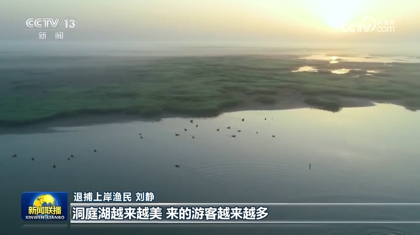

【New Ideas Lead New Journeys】Promoting a Decade of Fishing Ban in the Yangtze River, Writing a New Chapter in the Great Protection of the Yangtze River
CCTV news 2024-05-15 20:07CCTV News: As a landmark project for the comprehensive protection of the Yangtze River, the decade-long fishing ban in the Yangtze River has entered its fourth year this year. General Secretary Xi Jinping pointed out that the fishing ban in the Yangtze River is an important decision made for the overall situation and for future generations. Keeping in mind the General Secretary's instructions, provinces and cities along the Yangtze River continue to promote the restoration of aquatic biodiversity in the Yangtze River and strive to ensure employment and livelihood for fishermen who have retired from fishing. During this period, reporters went deep into both banks of the Yangtze River to record the significant phased achievements of the fishing ban work and the solid actions of the majority of cadres and masses to unswervingly promote the decade-long fishing ban in the Yangtze River.
Walking along the Yangtze River, researchers have discovered many encouraging phenomena.

In the southern source of the Yangtze River, a new habitat for the small-headed naked carp has been discovered, with a population of over 30,000 fish, providing valuable data for aquatic ecological protection.
In the middle reaches of the Yangtze River, tracking shows that the successful sea entry rate of artificially bred and released Chinese sturgeon has increased from about 45% to over 60%; the trend of miniaturization and low-age fish in Poyang Lake has been curbed, and the survival environment of habitats has been improved.
In the lower reaches of the Yangtze River, since March this year, a large-scale migration of wild Chinese mitten crabs has been observed for the first time at the mouth of the Qinhuai River in Nanjing, with a significant increase in population.

The recovery of aquatic biological resources has improved, witnessing the phased achievements of the decade-long fishing ban in the Yangtze River over the past three years.
The implementation of the decade-long fishing ban in the Yangtze River is an important decision made by the Party Central Committee with Comrade Xi Jinping at its core, based on the long-term interests of the Chinese nation. Since the 18th National Congress of the Communist Party of China, the General Secretary has conducted multiple inspections and research along the Yangtze River, gaining a detailed understanding of the implementation of the decade-long fishing ban. He pointed out that the fishing ban must be firmly promoted and the achievements already made must be consolidated.
According to the deployment, starting from January 1, 2021, a ten-year fishing ban has been implemented in the main stream of the Yangtze River, large lakes connected to the river, important tributaries, and some sea areas at the mouth of the Yangtze River, prohibiting the productive fishing of natural fishery resources throughout the year. More than three years into the fishing ban, relevant assessments show that the aquatic biological integrity index of the main stream of the Yangtze River, Poyang Lake, and Dongting Lake has improved by two levels from the worst "no fish" before the ban. In 2022, the number of Yangtze River finless porpoises reached 1,249, achieving a historic halt in decline and a rebound. The water quality of the main stream of the Yangtze River has remained at Class II for four consecutive years.
Implementing the decade-long fishing ban in the Yangtze River and addressing the production and living issues of fishermen who have retired from fishing are essential for a stable and solid social foundation for the fishing ban.
More than 30,000 fishermen in Anhui who have retired from fishing and transitioned to other industries have received employment training under government guidance. In Dangtu County, they learn aquaculture techniques for free, and farming ecological crabs has become a new choice for retired fishermen.
In Yueyang, Hunan, which has more than 60% of the water area of Dongting Lake, the government has helped fishermen who have come ashore to build farms, develop the dried fish industry, and also led them to learn live streaming sales to expand sales channels.
On Tangyin Island in Poyang Lake, where fishermen have retired from fishing and come ashore, the local area is exploring the development of the tourism industry by planning and utilizing unique natural resources while continuing to protect the ecology. Over the more than three years of the fishing ban, relevant departments have established individual records for 231,000 retired fishermen, improving employment and social security levels through multiple channels.
Since the implementation of the decade-long fishing ban in the Yangtze River, the provinces and cities along the river have worked together with persistent efforts, continuously advancing the protection of the Yangtze River and consolidating the achievements of the fishing ban. Next, the provinces and cities along the river will strengthen the restoration of important aquatic biological habitats, establish dynamic and precise support services for retired fishermen, improve cross-regional and cross-departmental law enforcement cooperation mechanisms, and ensure that the clear waters of the Yangtze River continue to benefit future generations and the people.